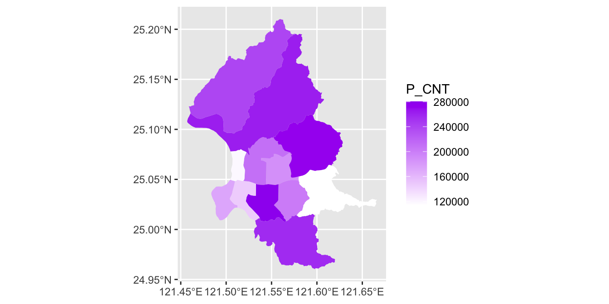
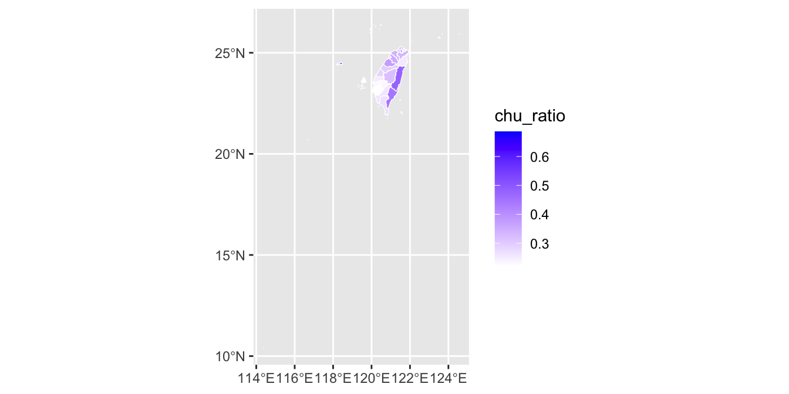

Chapter 28 GEOSPATIAL
地圖是一種用來展示地理空間信息的視覺化工具，可以幫助我們更好地了解和分析地理現象。常見的地圖種類通常可以分為兩類：區域圖和點位圖。
- 區域圖（Choropleth Map）是通過將地理區域劃分為幾個區域，然後用不同的顏色、陰影或圖案等方式來表示這些區域的某種屬性或數量。這種地圖通常用於展示國家、省份、城市等區域的人口、經濟、地形、氣候等相關數據。區域圖能夠直觀地展示地理現象在不同區域之間的差異和變化，並有助於我們進行比較和分析。
- 點位圖（Dot Density Map）則是通過在地圖上用點或符號來表示某種地理空間現象的分布或密度。例如，可以用紅點表示城市、綠點表示森林、藍點表示湖泊等等。這種地圖通常用於展示地理現象在空間上的分布和密度，並能夠直觀地展示相對密度和稀疏程度。
區域圖的數據形式：有兩種基本數據模型：向量（Vector）和網格（Raster）。
- 向量數據模型使用點、線、多邊形等基本要素來描述地理空間現象。例如，可以用一個線段來表示一條河流，用一個多邊形來表示一個國家或城市的邊界等。向量數據模型具有比較強的邏輯性和表達能力，特別適合描述較簡單的地理現象。
- 網格數據模型則是將地理空間區域劃分為一個個大小相等的格子，每個格子都有一個固定的數值，用來表示這個區域的某種屬性，例如溫度、濕度、高程等等。網格數據模型適合描述分布比較連續和具有變化的地理現象。
通常繪製地理資訊地圖的時候，會需要因應你要繪製的地域去下載地圖空間數據檔案（例如.shape或geojson檔等）。如台灣的就可以去社會經濟資料服務平台 (moi.gov.tw)下載。但也有一些套件內部就包含這些地理空間數據，例如下一節的例子rworldmap套件本身就有世界地圖。或者可以嘗試ggmap或rgooglemap等第三方服務（參考簡介：Map Visualization in R · Data Science and R）
28.1 World Map
library(readxl)
library(rworldmap) # for drawing rworldmaprawdata <- read_excel("data/WORLD-MACHE_Gender_6.8.15.xls", "Sheet1", col_names=T)
mapdata <- rawdata[,c(3, 6:24)]28.1.1 Bind data to map data
這段程式碼是在將自己的數據mapdata與rworldmap世界地圖數據進行結合。
首先，使用 joinCountryData2Map() 函數，將自己的數據和世界地圖數據按照國家的 ISO3 代碼進行連接，生成一張新的地圖。其中， mapdata 是指世界地圖數據， joinCode 參數指定連接時使用的 ISO3 代碼（亦即你預先知道你自己的資料中有ISO3國家代碼）。 nameJoinColumn 參數則用於指定自己數據中與國家對應的欄位名稱為iso3。
還有其他的joinCode如「“ISO2”,“ISO3”,“FIPS”,“NAME”, “UN” = numeric codes」等可參見該套件的說明rworldmap package - RDocumentation。
# join your data with the world map data
myMap <- joinCountryData2Map(mapdata, joinCode = "ISO3", nameJoinColumn = "iso3")## 196 codes from your data successfully matched countries in the map
## 1 codes from your data failed to match with a country code in the map
## 47 codes from the map weren't represented in your datamyMap$matleave_13## [1] 2 2 5 2 2 5 NA NA 3 5 5 2 4 3 3 3 5 2 5 5 3 2 3 3 2
## [26] 2 3 4 3 4 3 3 3 3 3 3 3 5 NA 3 5 5 3 5 2 3 2 2 2 3
## [51] 5 2 5 2 NA 4 3 4 3 2 3 4 2 2 4 NA 2 2 2 5 2 5 2 2 4
## [76] 4 2 4 3 4 2 2 5 3 2 3 2 5 NA 2 2 2 2 3 2 2 5 4 5 3
## [101] 5 3 2 4 3 2 5 5 2 3 2 2 2 NA 3 2 2 3 4 2 3 2 2 3 2
## [126] 2 1 5 NA 2 4 2 2 5 5 2 NA 2 2 2 3 2 2 2 3 5 1 5 5 5
## [151] 2 3 3 3 2 5 3 2 3 2 3 NA 2 2 5 2 1 5 4 4 2 NA 2 3 3
## [176] 3 NA NA NA 3 NA NA 2 2 NA NA 2 2 3 2 NA NA 2 NA 1 NA NA 2 NA NA
## [201] NA NA NA NA NA NA 2 2 2 3 NA NA 3 2 1 3 NA NA 2 NA 1 1 NA 1 NA
## [226] 3 NA NA 5 NA 2 NA 3 NA 1 5 2 NA NA NA 2 2 NA28.1.2 Drawing Map
mapCountryData() 函數用於將數據繪製在地圖上。其中， myMap 是已經連接過的世界地圖數據和自己的數據，包含了各國的地理空間信息和相關的數據資訊。 nameColumnToPlot 指定要顯示在地圖上的數據欄位為matleave_13，也就是 2013 年的產假長度。 catMethod 參數是決定視覺化時的數據分類是類別或連續，categorical表示將數據分成幾個等級來展示在地圖上。
mapCountryData(myMap
, nameColumnToPlot="matleave_13"
, catMethod = "categorical"
)28.2 Read Spatial Data from SEGIS
- 要繪製地理地圖會要先下載地圖檔，可以查詢「直轄市、縣市界線(TWD97經緯度)」和鄉鎮市區界線(TWD97經緯度) | 政府資料開放平臺 (data.gov.tw)。
- 接下來是取得要繪製在地圖上的資料。前面的rworldmap是已知地圖檔和資料檔中都有每個國家的ISO3代碼，所以可以用ISO3代碼來連結地圖檔和資料檔。如果是臺灣的資料，可能就要用縣市名稱來做連結。或者，某些圖資本身就有經緯度，甚至它並非區域圖，而是有經緯度的點位圖。這類的圖資檔案可以到社會經濟資料服務平台 (moi.gov.tw)查找並下載。
通常地理圖資檔有兩種格式：一種是geojson，一種是shapefile。
- shapefile 是一種老舊的地理圖資檔案格式，通常由 shp, shx, dbf, prj 等檔案組成。其中，shp 檔案包含了地理空間範圍和形狀的點與邊（邊通常是由點依序所構成，不會特別把邊標出來），shx 檔案是其索引文件，dbf 檔案則儲存了相關的屬性資訊，例如幾何特徵的名稱或變數，prj 檔案則是儲存了投影信息。shapefile 格式的優點是廣泛的應用性和支援程式豐富，可以在許多地理信息系統（GIS）和軟件中使用，是許多組織和機構最常用的地理圖資格式之一。
- geojson 則是一種基於 JSON 格式的地理圖資檔案格式，內容包含了地理空間範圍和屬性。geojson 的優點是格式簡單、容易理解和易於編輯，支援性也比較好。由於 geojson 使用的是文本格式，因此可以直接在許多文本編輯器中編輯和查看，也可以輕易地轉換成其他格式的地理圖資檔案。
這邊我們所要用的套件是sf，sf 是一個在 R 環境下進行地理圖資處理和分析的套件，他不僅支援多種檔案格式，包括 shapefile、GeoJSON、KML 等，並且可以直接將這些檔案轉換為 R 中的空間資料框架，方便進行進一步的處理和分析。更方便的特色是在於，它可以用tidyverse的風格來寫作，方便對地理圖資和其他數據進行整合和分析，甚至在使用View()的時候，把圖資當成一個變項。
library(sf)28.2.1 The case: Population and Density of Taipei
這個資料下載自社會經濟資料服務平台 (moi.gov.tw)的 111年9月行政區人口統計_鄉鎮市區_臺北市，實際上內部的資料包含368個鄉鎮的依性別分人口數、家戶數等。
111年9月行政區人口統計_鄉鎮市區_臺北市，實際上內部的資料包含368個鄉鎮的依性別分人口數、家戶數等。
資料變項包含每個區的家戶數（H_CNT）、總人口數（P_CNT）、男性人口數（M_CNT）、女性人口數（F_CNT）。等一下要計算每平方公里的家戶數或人口數時，你會疑惑為何沒有面積資料。
sf_tpe <-
st_read(dsn = "data/111年9月行政區人口統計_鄉鎮市區_臺北市_SHP/",
layer = "111年9月行政區人口統計_鄉鎮市區", quiet = T) %>%
mutate(across(where(is.character), ~iconv(., from = "BIG5", to = "UTF8"))) %>%
# mutate(across(where(is.double), ~if_else(is.na(.),as.double(0),.))) %>%
# st_set_crs(3826) %>% st_transform(4326) %>%
# filter(COUNTY == "臺北市")
filter(str_detect(COUNTY, "臺北市"))
sf_tpe %>% head()## Simple feature collection with 6 features and 9 fields
## Geometry type: MULTIPOLYGON
## Dimension: XY
## Bounding box: xmin: 300874.7 ymin: 2766756 xmax: 309745.8 ymax: 2776127
## CRS: NA
## TOWN_ID TOWN COUNTY_ID COUNTY H_CNT P_CNT M_CNT F_CNT INFO_TIME
## 1 63000010 松山區 63000 臺北市 78977 187552 87625 99927 111Y09M
## 2 63000020 信義區 63000 臺北市 87407 201951 95884 106067 111Y09M
## 3 63000030 大安區 63000 臺北市 117243 280332 130596 149736 111Y09M
## 4 63000040 中山區 63000 臺北市 98825 210156 97114 113042 111Y09M
## 5 63000050 中正區 63000 臺北市 64491 146628 69663 76965 111Y09M
## 6 63000060 大同區 63000 臺北市 51988 118065 57003 61062 111Y09M
## geometry
## 1 MULTIPOLYGON (((307703.1 27...
## 2 MULTIPOLYGON (((307788.7 27...
## 3 MULTIPOLYGON (((304591.5 27...
## 4 MULTIPOLYGON (((305699 2776...
## 5 MULTIPOLYGON (((302203.6 27...
## 6 MULTIPOLYGON (((302217.9 27...試著畫畫看。你會發現它的座標系是一個我們看不懂的數字，而不是想像中的經緯度。
sf_tpe %>%
ggplot() +
geom_sf()28.2.2 Projection 投影的概念
投影是指將地球表面的三維空間坐標轉換為二維平面坐標的過程，這是因為在實際應用中需要將地球表面的訊息表示在平面上，方便分析和可視化。然而，由於地球是一個球體，不同的投影方式會導致在不同位置和距離上的形狀、面積和方向出現差異，因此在使用地理空間數據進行分析和視覺化時需要注意投影的選擇和轉換。
除了投影之外，每個地理區域還有適合的參考橢球體和大地基準面。橢球體是指地球表面的形狀，大地基準面則是指地球表面的平均高程面。這些概念的選擇取決於具體的地理區域和應用場景，並且可能會對數據分析結果產生影響。基準點（Datum）則是用來定義地球表面上的某個點，從而將地球表面的形狀和大小轉換為平面坐標系中的數值。基準點分為區域性的（local）和全球的（global）。區域性的基準點通常是針對某個特定的地理區域進行定義，而全球的基準點則是針對整個地球進行定義。全球最常用的基準點是WGS84，它以地球質心為中心；而台灣常用的區域性基準點是TWD97，舊版則是用TWD67。基準點的選擇也可能會對數據分析結果產生影響。
- 投影法有對應的代號稱為 EPSG（歐洲石油探勘組織），他們制定了空間參考識別系統（SRID）。可以記兩個重要的:
- WGS84 = 4326
- TWD97 = 3826
- 參考：https://gis.stackexchange.com/questions/48949/epsg-3857-or-4326-for-googlemaps-openstreetmap-and-leaflet
Google Earth採用WGS84坐標系統的地理坐標系統。(EPSG：4326)
Google Maps採用以WGS84為基礎的投影坐標系統。(EPSG 3857)
Open Street Map數據庫中的數據以WGS84坐標系統的十進制度為單位進行儲存。(EPSG：4326)
Open Street Map瓦片和WMS服務採用以WGS84為基礎的投影坐標系統。(EPSG 3857)
https://epsg.io/3825 是台灣的坐標系統（3826、3827等也是，你可以打開看看）
- 用得到投影的情境
- 研究區域，想轉換座標（changing projections）：修改 EPSG code 或是改掉
proj4string的內容 - 原始資料缺投影方法：加上 EPSG code 或是加上
proj4string的內容
- 研究區域，想轉換座標（changing projections）：修改 EPSG code 或是改掉
- 如果需要進行投影轉換，可以使用 R 中的相關函數和方法。例如，
- 使用
st_crs()函數可以取得地理空間數據的投影系統； - 使用
st_transform()函數可以進行地理空間數據的投影變換； - 使用
st_set_crs()函數可以設定地理空間數據的投影系統等等。
- 使用
就下載的這個資料來說，他並沒有設定他的投影座標。
st_crs(sf_tpe)$proj4string## [1] NAst_crs(sf_tpe)## Coordinate Reference System: NA我們會希望在讀取資料的時候，設定他的投影座標。例如以下的例子是設定為TWD96（3826）然後轉換為全球座標WGS84（4326）。
sf_tpe <-
st_read(dsn = "data/111年9月行政區人口統計_鄉鎮市區_臺北市_SHP/",
layer = "111年9月行政區人口統計_鄉鎮市區", quiet = T) %>%
mutate(across(where(is.character), ~iconv(., from = "BIG5", to = "UTF8"))) %>%
st_set_crs(3826) %>%
# st_transform(4326) %>%
filter(str_detect(COUNTY, "臺北市"))
st_crs(sf_tpe)$proj4string## [1] "+proj=tmerc +lat_0=0 +lon_0=121 +k=0.9999 +x_0=250000 +y_0=0 +ellps=GRS80 +towgs84=0,0,0,0,0,0,0 +units=m +no_defs"st_crs(sf_tpe)## Coordinate Reference System:
## User input: EPSG:3826
## wkt:
## PROJCRS["TWD97 / TM2 zone 121",
## BASEGEOGCRS["TWD97",
## DATUM["Taiwan Datum 1997",
## ELLIPSOID["GRS 1980",6378137,298.257222101,
## LENGTHUNIT["metre",1]]],
## PRIMEM["Greenwich",0,
## ANGLEUNIT["degree",0.0174532925199433]],
## ID["EPSG",3824]],
## CONVERSION["Taiwan 2-degree TM zone 121",
## METHOD["Transverse Mercator",
## ID["EPSG",9807]],
## PARAMETER["Latitude of natural origin",0,
## ANGLEUNIT["degree",0.0174532925199433],
## ID["EPSG",8801]],
## PARAMETER["Longitude of natural origin",121,
## ANGLEUNIT["degree",0.0174532925199433],
## ID["EPSG",8802]],
## PARAMETER["Scale factor at natural origin",0.9999,
## SCALEUNIT["unity",1],
## ID["EPSG",8805]],
## PARAMETER["False easting",250000,
## LENGTHUNIT["metre",1],
## ID["EPSG",8806]],
## PARAMETER["False northing",0,
## LENGTHUNIT["metre",1],
## ID["EPSG",8807]]],
## CS[Cartesian,2],
## AXIS["easting (X)",east,
## ORDER[1],
## LENGTHUNIT["metre",1]],
## AXIS["northing (Y)",north,
## ORDER[2],
## LENGTHUNIT["metre",1]],
## USAGE[
## SCOPE["Engineering survey, topographic mapping."],
## AREA["Taiwan, Republic of China - between 120°E and 122°E, onshore and offshore - Taiwan Island."],
## BBOX[20.41,119.99,26.72,122.06]],
## ID["EPSG",3826]]sf_tpe %>%
ggplot() +
geom_sf()sf_tpe %>%
ggplot() + aes(fill = P_CNT) +
geom_sf(color = NA) +
scale_fill_gradient(low = "white", high = "purple")
面積資料可以用st_area()這個函式求得。st_area() 是 R 中一個與地理空間數據相關的函數，用於計算地理多邊形的面積。具體而言，st_area() 函數接受一個 Spatial* 或是 sf 的資料物件，可以計算其包含的每個多邊形的面積，並以相應的單位返回結果。其中 as.double(st_area(.))/1000000 的作用是將地理多邊形的面積從平方公尺轉換為平方公里。因為面積的單位是平方公尺，而人口密度的常用單位是人口數/平方公里，因此需要進行單位換算，將面積轉換為平方公里。
st_area() 函數的計算方式基於多邊形的投影，因此在使用該函數時需要注意地理空間數據的投影選擇和轉換。通常情況下，st_area() 函數可以自動識別多邊形的投影系統，並返回相應的面積值。如果需要在不同的投影系統間進行面積的轉換，則需要使用 st_transform() 函數進行投影變換。
需要注意的是，由於地球是一個球體，因此在計算面積時需要考慮到地球的曲率效應。st_area() 函數默認使用的是橢球面積計算公式（ellipsoidal area formula），可以更準確地計算地理多邊形的面積。如果需要更精確的面積計算結果，也可以使用球面面積計算公式（spherical area formula）或是進行局部的面積校正。
sf_tpe %>%
mutate(p_density = P_CNT/(as.double(st_area(.))/1000000)) %>%
ggplot() + aes(fill = p_density) +
geom_sf(color = NA) +
scale_fill_gradient(low = "white", high = "purple")28.3 Town-level: Taipei income
有時候我們所希望繪製的資料並非來自SEGIS這類有圖資的平台（例如下面所用的台北各區每人平均所得），那我們就會需要先取得另一份圖資資料（例如下例的鄉鎮市區界圖資），再透過一些索引（Index）來結合這兩方的資料。而下面這個例子，還為了要將鄉鎮市區名稱打在各區的中央，結合了另一份資料，一共結合了三方的資料。
28.3.1 Reading income data
taipei_income <- readxl::read_xlsx('data/台北各區每人所得.xlsx')
taipei_income %>% head()## # A tibble: 6 × 2
## district income
## <chr> <dbl>
## 1 松山區 1012678
## 2 信義區 909336
## 3 大安區 1038921
## 4 中山區 861415
## 5 中正區 1022438
## 6 大同區 81443928.3.2 Read Taipei zip code
等一下我打算把每區的名稱打在各區上，但是我沒有各區的名稱應該打在哪裡的經緯度，恰好Zip Code這份資料裡面有台北市各區的經緯度中心，因此先把它讀進來合併用。
library(jsonlite)
twzipcode_json <- fromJSON("data/twzipcode.json")[[1]]
taipei_zipcode <- twzipcode_json %>%
filter(city == "台北市")
taipei_zipcode %>% head()## zip_code district city lat lng
## 1 100 中正區 台北市 25.0324 121.520
## 2 103 大同區 台北市 25.0634 121.513
## 3 104 中山區 台北市 25.0697 121.538
## 4 105 松山區 台北市 25.0600 121.558
## 5 106 大安區 台北市 25.0268 121.543
## 6 108 萬華區 台北市 25.0286 121.498# install.packages("rmapshaper")
st_read("data/shapefiles/TOWN_MOI_1100415.shp") %>%
filter(COUNTYNAME == "臺北市") %>%
# st_transform(3825) %>% #3857
# rmapshaper::ms_simplify(keep=0.05) %>%
left_join(taipei_income, by = c("TOWNNAME" = "district")) %>%
left_join(taipei_zipcode, by= c("TOWNNAME" = "district")) %>%
ggplot() + aes(fill = income) +
geom_sf() +
scale_fill_gradient2(low = "#FF8888", high = "#0000AA",
midpoint = median(taipei_income$income)) +
geom_text(aes(x = lng, y = lat, label = TOWNNAME), family = "Heiti TC Light", color = "black", size = 2.5)## Reading layer `TOWN_MOI_1100415' from data source
## `/Users/jirlong/Library/CloudStorage/Dropbox/Programming/JOUR5014/data/shapefiles/TOWN_MOI_1100415.shp'
## using driver `ESRI Shapefile'
## Simple feature collection with 368 features and 7 fields
## Geometry type: MULTIPOLYGON
## Dimension: XY
## Bounding box: xmin: 114.3593 ymin: 10.37135 xmax: 124.5611 ymax: 26.38528
## Geodetic CRS: TWD9728.4 Voting map - County level
本練習將以2016年總統選舉為例，比較朱立倫、宋楚瑜、蔡英文在不同縣市的得票率，並繪製為地圖。該地圖比較有趣的是，因為台灣的地圖實際上是由很多點連成的，在這麼大的規模如果把全部的點全部繪製上去，會繪製非常久，而讀者也不盡然能夠看清楚這個差別，所以可以降低點的數量。
28.4.1 Loading county-level president voting rate
president_vote <- readxl::read_xlsx('data/president.xlsx') %>%
mutate(total = chu + tsai + song) %>%
mutate(chu_ratio = chu / total,
tsai_ratio = tsai / total,
song_ratio = song / total,
tsai_chu_ratio = tsai / chu)28.4.2 sf to load county level shp
https://fidanalytics.co.uk/blog/simplifying-polygons-r
county_sf <- st_read("data/shapefiles/COUNTY_MOI_1090820.shp")## Reading layer `COUNTY_MOI_1090820' from data source
## `/Users/jirlong/Library/CloudStorage/Dropbox/Programming/JOUR5014/data/shapefiles/COUNTY_MOI_1090820.shp'
## using driver `ESRI Shapefile'
## Simple feature collection with 22 features and 4 fields
## Geometry type: MULTIPOLYGON
## Dimension: XY
## Bounding box: xmin: 114.3593 ymin: 10.37135 xmax: 124.5611 ymax: 26.38528
## Geodetic CRS: TWD97# plot(county_sf) # Taking very long time28.4.3 Simplfying map polygon
county_ms_simp <- st_read("data/shapefiles/COUNTY_MOI_1090820.shp") %>%
# rmapshaper::ms_simplify(county_sf, keep=0.001)
st_simplify(dTolerance = 100)## Reading layer `COUNTY_MOI_1090820' from data source
## `/Users/jirlong/Library/CloudStorage/Dropbox/Programming/JOUR5014/data/shapefiles/COUNTY_MOI_1090820.shp'
## using driver `ESRI Shapefile'
## Simple feature collection with 22 features and 4 fields
## Geometry type: MULTIPOLYGON
## Dimension: XY
## Bounding box: xmin: 114.3593 ymin: 10.37135 xmax: 124.5611 ymax: 26.38528
## Geodetic CRS: TWD97plot(county_ms_simp)# install.packages("rmapshaper")
plot_chu <- st_read("data/shapefiles/COUNTY_MOI_1090820.shp") %>%
# st_transform(3825) %>% #3857
st_simplify(dTolerance = 100) %>%
# rmapshaper::ms_simplify(keep=0.01) %>%
right_join(president_vote, by=c("COUNTYNAME"="county"))## Reading layer `COUNTY_MOI_1090820' from data source
## `/Users/jirlong/Library/CloudStorage/Dropbox/Programming/JOUR5014/data/shapefiles/COUNTY_MOI_1090820.shp'
## using driver `ESRI Shapefile'
## Simple feature collection with 22 features and 4 fields
## Geometry type: MULTIPOLYGON
## Dimension: XY
## Bounding box: xmin: 114.3593 ymin: 10.37135 xmax: 124.5611 ymax: 26.38528
## Geodetic CRS: TWD97plot_chu %>%
ggplot(aes(fill = chu_ratio)) +
geom_sf(color="white", size=0.2) +
scale_fill_gradient(low = "#FFFFFF", high = "#0000FF") +
theme_void()
28.4.4 Practice. Drawing Taiwan county-scale map from SEGIS data
這個練習希望你從SEGIS下載一個縣市層級的資料，並測試以下函式的結果：
- 運用
st_transform()和st_set_crs()等函式測試用3826或4326座標系有何不同？- 在用
st_area()計算面積時會不會有何不同？ - 在視覺化的時候可否看出來有何不同？請寫程式測試看看。
- 在用
st_simplify()這個函式可以降低點的數量，但運用st_simplify(dTolerance = 100)，dTolerance的設定是如何影響點的數量？100所指的是什麼？公尺嗎？- 用
st_bbox()可以得知上下界為何，請試用這個函式看看？ - 如何運用
st_crop()切出台灣本島（不包含澎湖、金門、馬祖）得地圖？
28.5 Mapping data with grid
library(sf)28.5.1 Loading Taiwan map
TW.island <- st_read("data/shapefiles/COUNTY_MOI_1090820.shp") %>%
st_transform(3826) %>%
mutate(id = row_number())## Reading layer `COUNTY_MOI_1090820' from data source
## `/Users/jirlong/Library/CloudStorage/Dropbox/Programming/JOUR5014/data/shapefiles/COUNTY_MOI_1090820.shp'
## using driver `ESRI Shapefile'
## Simple feature collection with 22 features and 4 fields
## Geometry type: MULTIPOLYGON
## Dimension: XY
## Bounding box: xmin: 114.3593 ymin: 10.37135 xmax: 124.5611 ymax: 26.38528
## Geodetic CRS: TWD9728.5.2 Building grid
# Defining grid size
grid.extent <-
matrix(c(-50000, 2920000, # (Xmin, Ymax)
610000, 2920000, # (Xmax, Ymax)
610000, 2420000, # (Xmax, Ymin)
-50000, 2420000, # (Xmin, Ymin)
-50000, 2920000), # (Xmin, Ymax)
byrow = TRUE, ncol = 2) %>%
list() %>% # convert to list for st_polygon()
st_polygon() %>% # generate polygon
st_sfc(crs = 3826) # convert format and crs
# plot(grid.extent)
# Generating grid
Grid.sys <-
st_make_grid(grid.extent,
n = c(132, 100), # Resolution of grids
crs = 3826, # crs: TWD97 121
what = 'polygons') %>% # output format: polygon
st_sf('geometry' = ., data.frame('ID' = 1:length(.))) # convert to sf with id
# st_transform(3826) # assigning crs again ?
plot(Grid.sys)Grid.TW <-
Grid.sys[subset(TW.island),]
plot(Grid.TW)
28.5.3 loading data
president_vote <- readxl::read_xlsx('data/president.xlsx') %>%
mutate(total = chu + tsai + song) %>%
mutate(chu_ratio = chu / total,
tsai_ratio = tsai / total,
song_ratio = song / total,
tsai_chu_ratio = tsai / chu)28.5.4 Merging data
tw_info <- TW.island %>%
st_set_geometry(NULL) %>%
left_join(president_vote, by=c("COUNTYNAME"="county"))# TW_info <- sf::st_intersects(Grid.TW, TW.island) # creat a data.frame of IDs in IBA for 1km grid
grid_id <- sapply(st_intersects(Grid.TW, TW.island), function(z) if (length(z)==0) NA_integer_ else z[1])
Grid.TW <- Grid.TW %>%
mutate(grid_id = grid_id) %>%
left_join(tw_info, by=c("grid_id"="id"))Grid.TW %>%
ggplot(aes(fill = tsai_ratio)) + geom_sf(lwd = 0.1, color="black") +
scale_fill_continuous(high="#2EFF71", low="blue") +
theme_void()